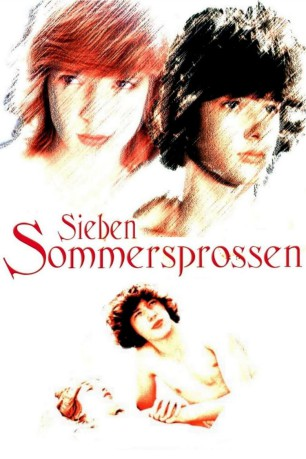

#10717 Sieben Sommersprossen
 
 IMDB-Wertung: 6.5 / 10
IMDB-Wertung: 6.5 / 10  Metascore: 0
Metascore: 0 
Nachdem sie früher einmal im selben Haus gewohnt hatten, treffen sich die 14-jährige Karoline und der 15-jährige Robbi nach längerer Zeit in einem Ferienlager wieder. Mit der Zeit entwickelt sich eine erste Liebe zwischen den Beiden. Doch es gibt viele Hindernisse für sie. Der Tagesablauf ist streng reglementiert. Die Lagerleiterin ist streng und interessiert sich nur für die körperliche Ertüchtigung. Gefühle – vor allem die der jungen Menschen untereinander – versteht sie nicht. Deshalb ist sie zunächst auch dagegen, dass der Betreuer Herr Benedikt, der als Einziger Verständnis für die jungen Menschen hat, mit den Jugendlichen das Stück Romeo und Julia für die benachbarte LPG aufführt. Doch auch innerhalb der Gruppe von Jugendlichen sind sich nicht alle Grün. So hat das Mädchen Marlene selbst ein Auge auf Robbi geworfen und versucht, die Beziehung der Beiden zu sabotieren.
Jahr: 1978
Dauer: 75 Minuten
FSK: 12
Land: Ost-Deutschland Studio: Progress Film-VerleihTonspuren:
Untertitel:
Auflösung: 1080p (1920x1080) Größe: 4474 MB
Genre: Drama, Komödie, Liebe
Regisseur: Herrmann Zschoche
Drehbuch: Christa Kozik, Gabriele Herzog
Soundtrack: Gunther Erdmann, Peter Gotthardt
Darsteller:
- Carola Braunbock als Köchin (uncredited)
 Steffi Kühnert als (uncredited)
Steffi Kühnert als (uncredited)- Kareen Schröter als Karoline Hinze
- Harald Rathmann als Robert
- Christa Löser als Frau Kränkel
- Evelyn Opoczynski als Bettina
- Jan Bereska als Benedikt
- Barbara Dittus als Karolines Mutter
- Hilmar Baumann als Roberts Vater
- Janine Beilfuß als Marlene
- Carola Spindler als Doris
- Sabine Schmich als Johanna
- Michael Böttcher als Paulchen
- René Rudolph als Micha
- Frank Droste als (uncredited)
- Mario Eckardt als (uncredited)
- Heide Grossmann als (uncredited)
- Annette Holzmann als Tina (uncredited)
- Annette Juesche als (uncredited)
- Petra Klaembt als (uncredited)
- Stefan Klar als (uncredited)
- Birgit Krueger als Große Schwester (uncredited)
- Peer Krueger als (uncredited)
- Karsten Peter als Sven (uncredited)
- Karsten Rintsch als Tom (uncredited)
- Jeanette Rogge als (uncredited)
- James Schulz als Tinas Freund (uncredited)
- Karsten Sinnak als (uncredited)
- Andreas Steinke als (uncredited)
- Hannes Stelzer als LPG-Vorsitzender (uncredited)
- Kerstin Ullrich als (uncredited)
- Simone von Zglinicki als Karoline Hinze (uncredited)
Datei: X:\1978\Sieben Sommersprossen (1978, FSK12, 1920x1080).mkv seit 22.02.2019
Festplatte: HD 1971-1979
 Es gibt insgesamt 31 Filme in der Gruppe '1978'
Es gibt insgesamt 31 Filme in der Gruppe '1978'